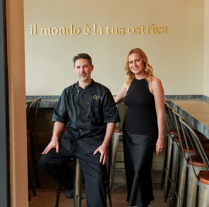

Taverna draws inspiration from the simplicity and warmth of rustic Italian kitchens. Located in Jacksonville’s historic San Marco neighborhood, this rustic, yet sophisticated dining destination has earned many accolades since opening in 2009.
Staff
-
Executive Chef Sam Efron and Wine Director Kiley Wynne Efron, a husband-and-wife team, opened Taverna after building their careers in some of the finest restaurants in the country. Together, they ensure Taverna delivers a fresh perspective on Italian dining. Their seasonal menus, curated wines, and handcrafted cocktails let the flavors of simple ingredients shine.
-

Sam Efron
Executive Chef / Proprietor sam@tavernasanmarco.comJacksonville native Sam Efron developed his culinary style through formal and experiential training. He discovered European cuisine while living abroad as an exchange student from Florida State University. Upon graduating, he enrolled in the Culinary Institute of America. Sam refined his skills at landmark restaurants such as Four Seasons Hotel in New York, Gramercy Tavern, Aqua, and Silks at The Mandarin Oriental Hotel in San Francisco. Once he returned to Jacksonville, Sam assisted in the opening of Restaurant Orsay. In 2009 he opened Taverna with his wife, Kiley.
Kiley Wynne Efron
Co-Owner / Partner kiley@tavernaoceana.comKiley Wynne Efron’s passion for Italian food and wine helps define Taverna. As the restaurant's Wine Director, Kiley is always on the hunt for great wines to add to her Wine Spectator award-winning list. Kiley's professional background includes time spent at some of California’s finest restaurants, including A16 and Rivoli. Kiley is a graduate of the California College of the Arts.
-
Tina Orr
General Manager tina@tavernasanmarco.com -
Rose Barber
Manager rose@tavernasanmarco.com -
Marco Castellucci
Manager marco@tavernasanmarco.com -
Kimberlie Beers
Sommelier/ Wine Director kim@tavernasanmarco.com -
Amani Mardini
Assistant Special Events Coordinator amani@tavernasanmarco.com -
Troyce McDaniel
Operations Manager / Inventory Manager troyce@tavernasanmarco.com -
Sarah Johnson
Bar Manager sarah@tavernasanmarco.com -
Ben Behymer
Head Chef ben@tavernasanmarco.com -
Audrey Buckley
Pastry Chef audrey@tavernasanmarco.com -
Chad Chinnici
Sous Chef chad@tavernasanmarco.com -
Tony Hanson
Sous Chef tony@tavernasanmarco.com
Job Opportunities
Our staff combines talent, passion, and hard work to create memorable moments for our guests. We take pride in giving our team members hands-on training in the world of Italian food and wine. In turn, we ask that our staff take pride in their role within our restaurant family. We’re big believers in personality, fun, and professional development. To learn more about joining our team, please email your resume to contact@tavernasanmarco.com.